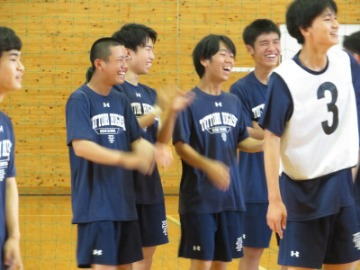
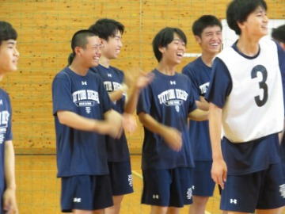

頑張れ，東高生！～全国大会出場生徒壮行会～
2023年7月25日 15時05分７月２１日（金）、終業式に先立ち、全国高校総体（インターハイ）・全国高総文祭等の全国大会に出場する部活・個人に対する壮行会を行いました。

７月２１日（金）、終業式に先立ち、全国高校総体（インターハイ）・全国高総文祭等の全国大会に出場する部活・個人に対する壮行会を行いました。
本日、２年生球技大会を開催！
午前中のみの短い時間でしたが、元気いっぱい、笑顔いっぱいの球技大会となっていました。
７月14日（金）の午後、本校において、鳥取県エキスパート教員（高校国語）に認定されている荻原 伸先生の公開研究授業が実施されました。
本日、講師として鳥取少年鑑別支所の法務教官 松本 浩一氏をお迎えし、オンラインにて、薬物乱用防止についてお話しいただきました。
先週の大雨で延期になった球技大会。本日、１年生が入学して初めての球技大会を行いました。
７月１２日、鳥取県福祉相談センターの鳥取県DV予防啓発支援員の方々を講師にお迎えし、２年生の各教室でデートDVについて教えていただきました。
本日から学年ごとの球技大会が行われます。初日の今日は３年生の球技大会でした。
本日，今週末から米子市民球場で行われる全国高等学校野球選手権大会鳥取県大会に出場する硬式野球部の壮行会を行いました。
本HPでも紹介させていただいたジャマイカ高校生と本校陸上部員との陸上競技交流の様子について，日本海新聞に記事として取り上げていただきました。（令和５年６月24日付）
20230624付_日本海新聞（”速くなる練習”一緒に）.pdf
応援してくださる皆さんへ
「２年前に見た景色をもう一度見たい。」書道パフォーマンス全国大会の舞台となる愛媛でもう一度，自分達の最高のパフォーマンスがしたいというそんな強い思いを胸に私達は日々頑張ってきました。
このたび，昨年は叶わなかった夢が叶い，自分達の力で全国出場をつかみとれたことを嬉しく思います。自らの夢を堂々と人に語ることで，実現につながっていくことを身に染みて感じました。
ここまで来られたのは，ともに頑張ってきた書道部のみんな，顧問の先生，いつもそばで支えてくれた保護者，そして東高の友達のおかげです。
そんな素敵な皆さんへの感謝を忘れず，全力で演技します。
 
